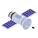
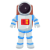
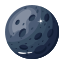

O que podes ver por aqui?


Satélites
Satélites artificiais são objetos criados pelo homem, lançados ao espaço para fins de comunicação, observação ou exploração...


Astronautas
Os astronautas exploram o espaço, realizando pesquisas científicas em condições de microgravidade...


Lua
A Lua é o único satélite natural da Terra e sempre mostra a mesma face devido à rotação sincronizada...